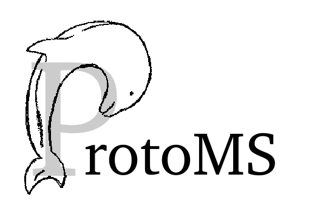

Navigation
index
modules
|
home
|
search
|
This Page
Show Source
Quick search
Enter search terms or a module, class or function name.
==
tools package
Submodules
tools.ambertools module
tools.build_template module
tools.calc_bar module
tools.calc_clusters module
tools.calc_density module
tools.calc_dg module
tools.calc_gcsingle module
tools.calc_replicapath module
tools.calc_rmsd module
tools.calc_series module
tools.calc_ti module
tools.clear_gcmcbox module
tools.convertatomnames module
tools.convertwater module
tools.distribute_waters module
tools.divide_pdb module
tools.generate_input module
tools.make_dummy module
tools.make_gcmcbox module
tools.make_single module
tools.merge_templates module
tools.pms2pymbar module
tools.scoop module
tools.simulationobjects module
tools.solvate module
tools.split_jawswater module
Module contents
Navigation
index
modules
|
home
|
search
|